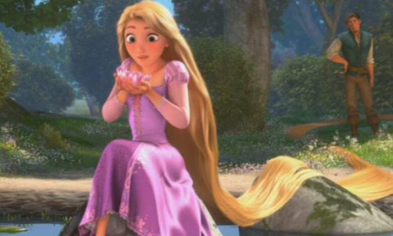
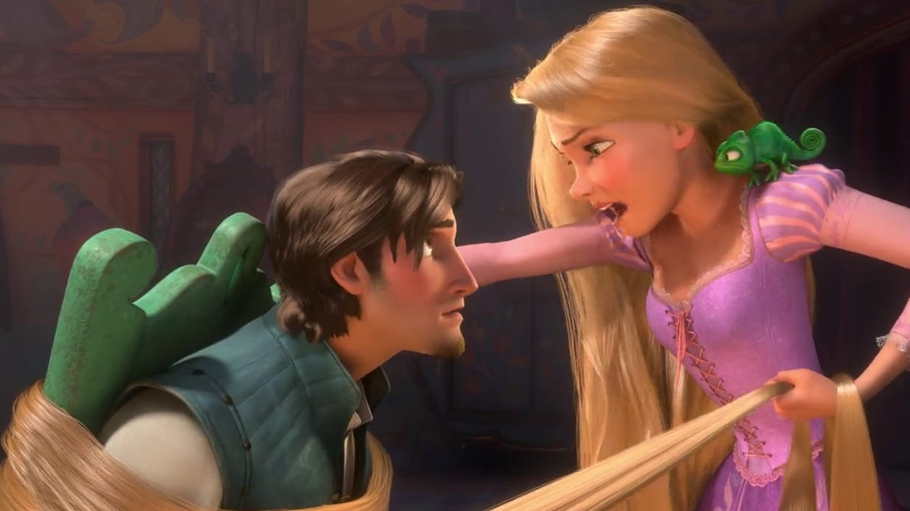
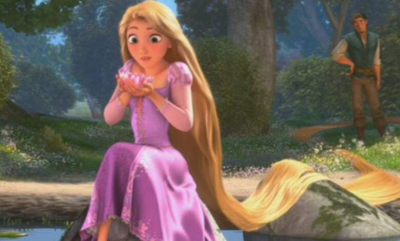
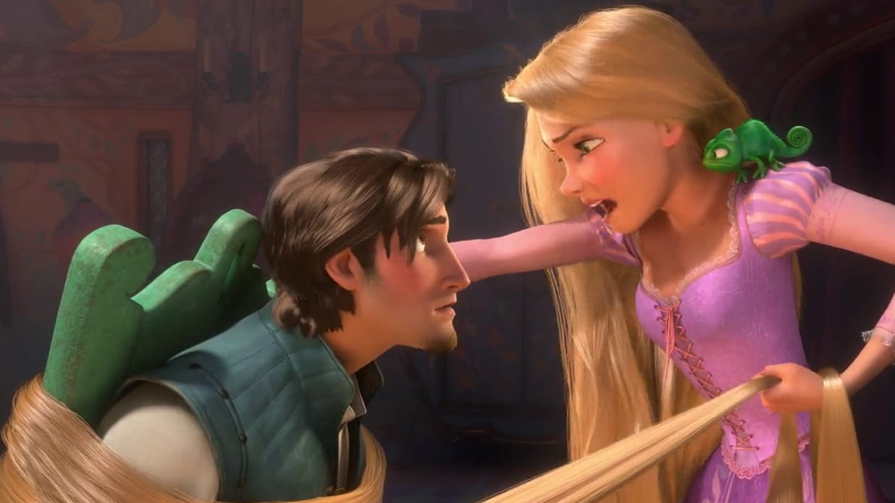
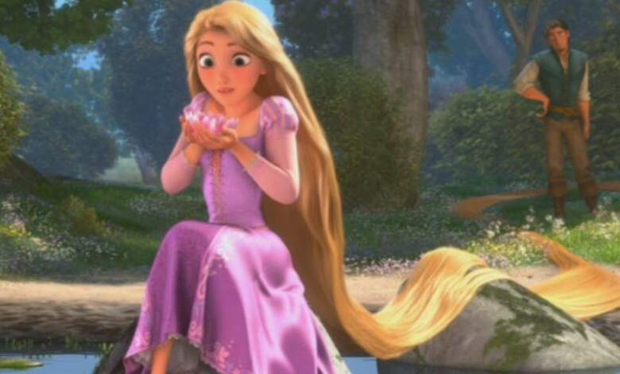
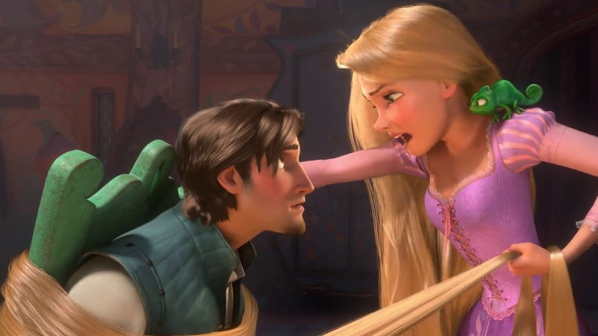
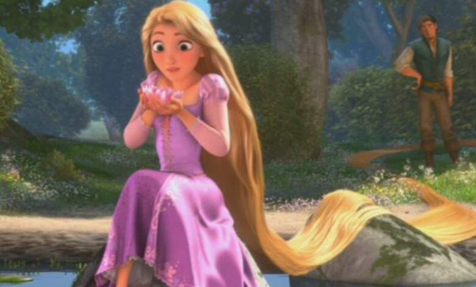
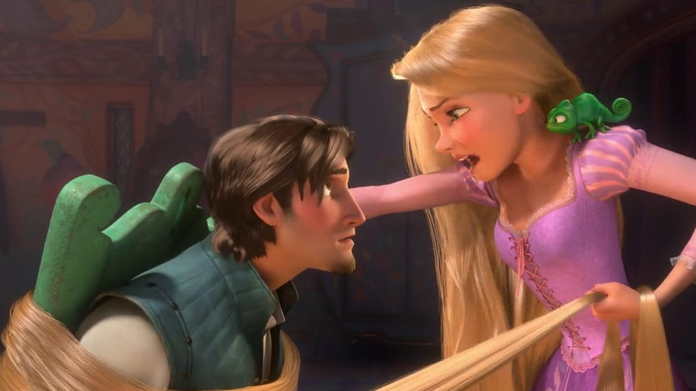

Rapunzel es una princesa de Disney que protagoniza la película "Enredados". Es conocida por su largo cabello mágico que tiene el poder de curar y otorgar juventud. La historia de Rapunzel se basa en un cuento de hadas de los hermanos Grimm, donde una joven es encerrada en una torre por una bruja malvada. A lo largo de la película, Rapunzel descubre su verdadera identidad como princesa y encuentra el amor con un ladrón llamado Flynn Rider. La película destaca temas como la libertad, el autodescubrimiento y la importancia de seguir tus sueños.
Flynn rider, el más buscado y encantador bandido del reino, se esconde en una misteriosa torre y allí se encuentra con Rapunzel, una bella y avispada adolescente con una cabellera dorada de 21 metros de largo, que vive encerrada allí desde hace años. Ambos sellan un pacto, y a partir de ese momento la pareja vivirá emocionantes aventuras en compañía de un caballo superpolicía, un camaleón sobreprotector y una ruda pandilla de matones.